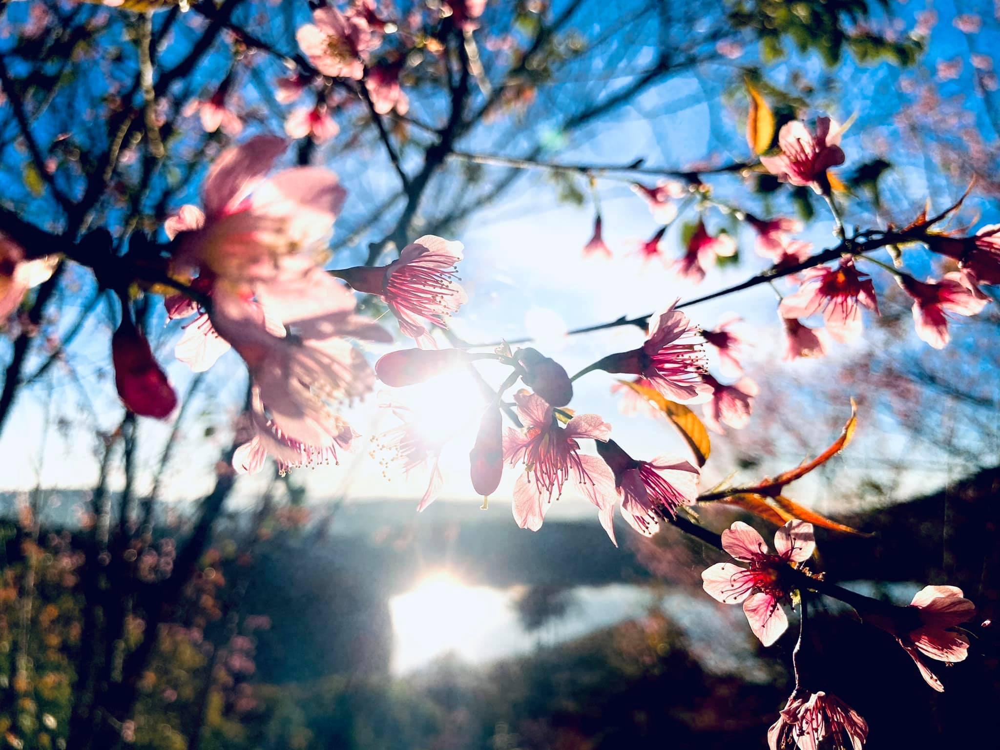

My name is Thao Tran and I come from Vietnam. I have stayed in the United State for 5 years.
I come from a beautiful and peaceful hometown called Dalat. It is very famous for the tourist because it has four seasons day. In addition, its unique weather also provide good conditions for growing flowers. As the result, Dalat is also called as "City of Thousand flowers".

When I first come to the U.S, my English was weak with a thick accent. With the help of many foreign and American friends, I have improved my English
I have passion with scince such as math, chemistry, physic. I am looking forward to transferring to North Carolina State University for Bachelor Degree in Nuclear Enginerr. I want to work and innovate project, chemical that can help to solve nuclear waster and its toxic.
In my free time, I like watching Netflix series and cooking some Vietnames food for my family
Click here to return to the homepage